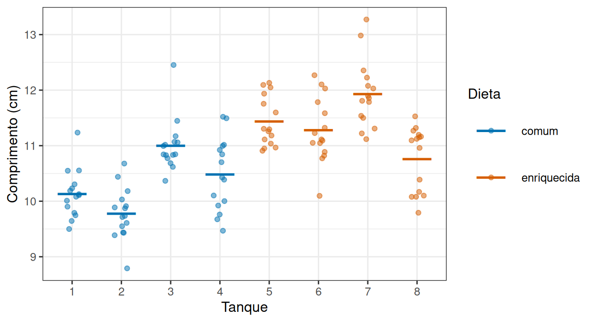

O que conta como réplica?
Leitura prévia
1 Um experimento com 60 peixes
Uma pesquisadora quer saber se uma dieta enriquecida faz juvenis de robalo crescerem mais rápido.
Ela monta o experimento assim: dois tanques. No tanque 1, todos os peixes recebem a dieta comum. No tanque 2, todos recebem a dieta enriquecida. Trinta peixes em cada tanque. Ao fim de seis semanas, ela mede o comprimento de cada peixe: 60 medidas.
A dieta enriquecida apresenta média maior. A diferença é grande e o teste estatístico produz um resultado convincente.
Só que o experimento não permite concluir nada sobre a dieta.
2 Siga o tratamento até onde ele foi aplicado
A pergunta que desmonta o problema é simples: o sorteio da dieta foi feito quantas vezes?
Duas. A dieta comum foi atribuída ao tanque 1 e a enriquecida ao tanque 2. Nenhum peixe recebeu uma dieta individualmente: cada peixe recebeu a dieta do seu tanque.
Isso significa que o tratamento foi aplicado ao tanque, não ao peixe. O tanque é a unidade experimental: a menor unidade que recebeu uma atribuição independente de tratamento.
Os 30 peixes de um tanque são subamostras: medidas repetidas dentro da mesma unidade experimental. Eles descrevem muito bem aquele tanque, mas não acrescentam nenhuma repetição independente do tratamento.
Com dois tanques, o experimento tem uma réplica por tratamento. E com uma réplica por tratamento, qualquer diferença entre tanques pode vir da dieta ou de qualquer outra coisa que diferencie os dois tanques: temperatura, luz, aeração, posição na sala, o acaso da distribuição inicial dos peixes.
Não há como separar. O efeito da dieta está confundido com o efeito do tanque.
3 Por que 60 medidas não resolvem
É tentador pensar que 30 peixes por tratamento é bastante gente e que isso compensa. Não compensa, e vale entender por quê.
Medir mais peixes dentro do mesmo tanque reduz a incerteza sobre a média daquele tanque. Mas o que a pergunta exige é comparar dietas, e para isso precisamos saber quanto tanques tratados da mesma forma variam entre si. Com um tanque por dieta, essa variação nunca foi observada.
O gráfico abaixo mostra o que acontece nos dois cenários.
Repare em duas coisas na figura.
Dentro de cada tanque, os peixes se parecem: os pontos formam nuvens compactas. Entre tanques da mesma dieta, as médias já não coincidem: o tanque 1 e o tanque 3 receberam a mesma coisa e mesmo assim diferem.
Essa segunda variação é a régua correta para julgar o efeito da dieta. Um experimento com dois tanques a apaga por completo.
4 Pseudorreplicação
Analisar os 60 peixes como se fossem 60 réplicas independentes tem nome: pseudorreplicação. O termo foi popularizado por Hurlbert (Hurlbert 1984) justamente ao revisar experimentos ecológicos publicados, e o diagnóstico continua atual.
O sintoma é sempre o mesmo: o número de linhas da planilha é maior que o número de vezes que o tratamento foi realmente sorteado. O efeito prático também: o erro padrão fica artificialmente pequeno, o intervalo de confiança fica estreito demais e o resultado parece mais convincente do que é.
5 A correção não é medir mais
Vale antecipar o desfecho, porque ele costuma contrariar a intuição.
O experimento dos dois tanques não melhora com 60 peixes por tanque, nem com 300. Cada peixe a mais refina a estimativa da média daquele tanque, e o que falta não é isso: falta ter visto tanques tratados da mesma forma diferirem entre si.
O que o experimento precisa é de mais tanques, ainda que menores e com menos peixes em cada um. Uma medida repetida barata não substitui uma unidade experimental cara.
6 Referências
Hurlbert, Stuart H. 1984. “Pseudoreplication and the Design of Ecological Field Experiments”. Ecological Monographs 54 (2): 187–211. https://doi.org/10.2307/1942661.